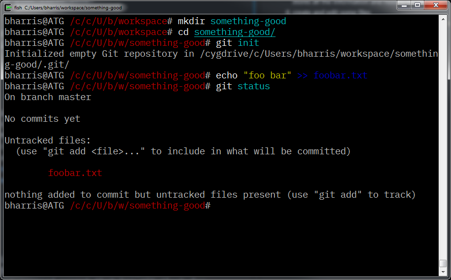
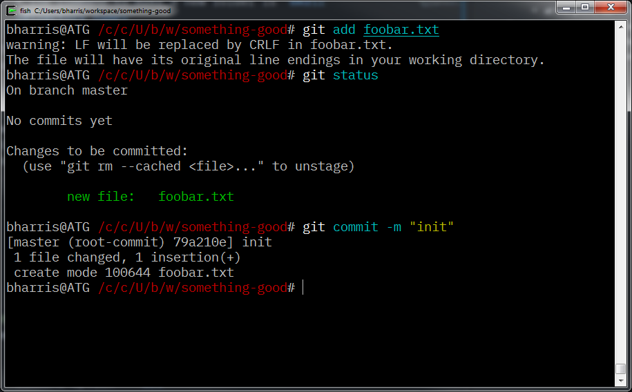

learngit¶
This is a compilation of notes, tips and a getting started guide to git. Please feel free to open a pull request or fork it for yourself!
here we go!¶
This is not meant to be a complete guide to git. Just some notes that I've gathered over the years of using git that might be helpful to share with others.
getting set up¶
- Download
gitand install it.- Some OSes/distros have
gitavailable through a package manager likebrew,apt, orpacman. That will be the easiest option.
- Some OSes/distros have
- Windows: open git bash (or any command prompt if you chose to install git system-wide). All other systems: open a terminal of your choice.
- Make sure that the install worked correctly by typing
git --version - Configure git with your name and email address:
git config --global user.name "Your Name Here"git config --global user.email "name@domain.tld"
You're ready to git gud!
making your first repo¶
- Create a new, empty folder (directory in git and unix speak)
- the command to make a new folder is
mkdir <directory_name>
- the command to make a new folder is
- Open or move to that folder in a command prompt that has git (look for git bash in the start menu if you're having trouble with this one)
- the command to move between directories is
cd <directory_name>
- the command to move between directories is
- Once you're in that directory, execute
git init. this command creates a.gitfolder inside the current folder, which is wheregitstores all the information and history for the repo. - Create and edit some files
- for example:
echo "foo bar" >> foobar.txt
- for example:
- Check
git statusyou should see something like this: - at this point, our working tree is "dirty", meaning that there are unsaved changes in the directory.
- At this point, you need to add the changes to the staging area with the
git addcommand- you can add individual files by name (
git add foobar.txt) or all changes to the working tree with the command option--all
- you can add individual files by name (
- Once the files are staged, you are now ready to
committhe changes. every commit requires a message, which can be specified with the-moption. if you don't give a message with thecommitcommand,gitwill open your file editor and ask you to enter one. 
Now you have a repo with one commit in it!
syncing your changes with others¶
Now we get to have some real fun. The whole point of a distributed version control system is to allow many people to be working on the same code at once.
There are many ways to collaborate on a git repo. The simplest way to share a repo is to use the --bare option with the init command.
Bare repos are generally stored on a server that all users have SSH access to: once the repo is created on the server, each person can
clonea copy to their local machine like this:git clone user@servername:path/to/repo
Otherwise, there are dozens of git hosting options, the most popular of which is github, which hosts the majority of all open source projects.
Another cool option is gitlab. They offer unlimited private repos in addition to public ones.
Let's take a look at syncing your repo with github (or any other git hosting location - just swap out the URLs).
- Create the repo (this assumes you're using GitHub)
- Set up the
remotes- This depends on whether you have already created the repository locally. once you have created the repo on github, it will display some tips for which commands to use
- For an existing repo:
git remote add origin git@github.com:username/reponameORgit remote add origin https://github.com/username/reponamedepending on your SSH key setup - If the repo doesn't exist yet,
clonethe repo like this:git clone git@github.com:username/reponame - A repo can have and use more than one remote. you can see the current remotes with this command:
git remote -v
- Before you can sync your changes, there needs to be at least one commit in the repo (not a problem for pre-existing repos). Create one now if you haven't.
- Now you can
pushyour commit history to the remote repo! use this command:git push origin --allto push all branches and commits to the remote (assuming that the remote is namedorigin)
To get changes that have other people have pushed the the repo while you were away, use the fetch and merge commands. since this is such a common operation, pull was created as a shortcut for git fetch immediately followed by git merge.
If you haven't made any changes since the last time you pulled the latest changes, it's usually a good idea to rebase. This will replay all of the work that has been done on top of the current repo state, avoiding extra merge commits in the repo history. Just use git pull --rebase.
external resources¶
So you want to learn more? Here are some more resources!
articles and documentation¶
- git flight rules
- progit book
- github interactive tutorial
- learn enough git to be dangerous
- atlassian git tutorials
- github documentation
tools and apps¶
- sourcetree app (a visual GUI tool for working with git repos: great for people who don't feel quite at home on the command line)
- github desktop (an alternate GUI by github)
contact me¶
Shoot me a message somewhere on the interwebz
- my site
- github
- irc (ben on tilde.chat, benharri on freenode)
Thanks for checking out my git guide!